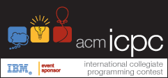

CEPC'09
November 6–8, 2009Wrocław, Poland
Online Ranking
The ranking (with comments in Polish).
It includes the results of the high school teams, which are scored separately from the universities' teams.
Video relation

University of Wrocław, Poland